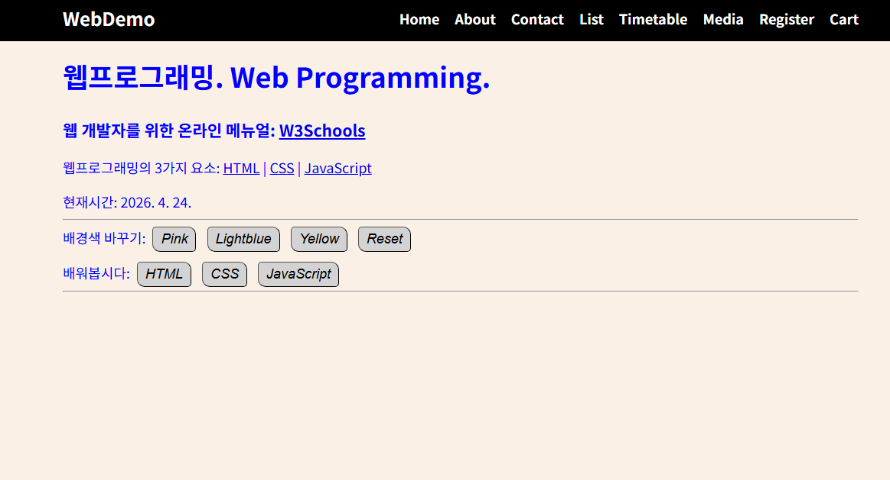
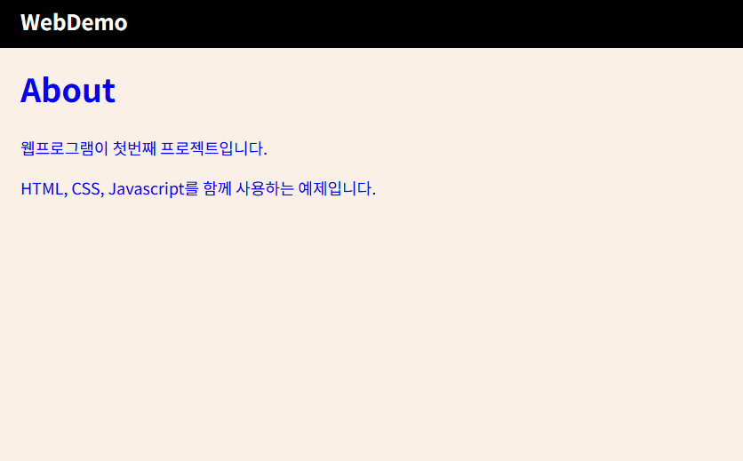
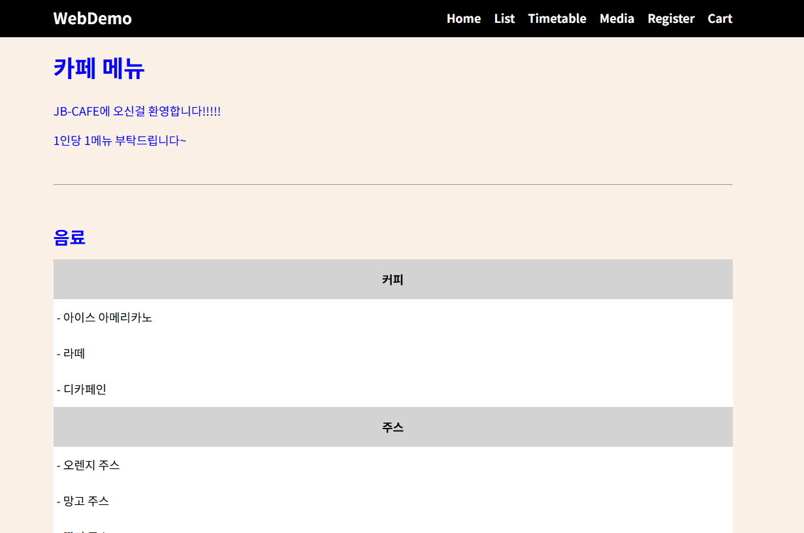
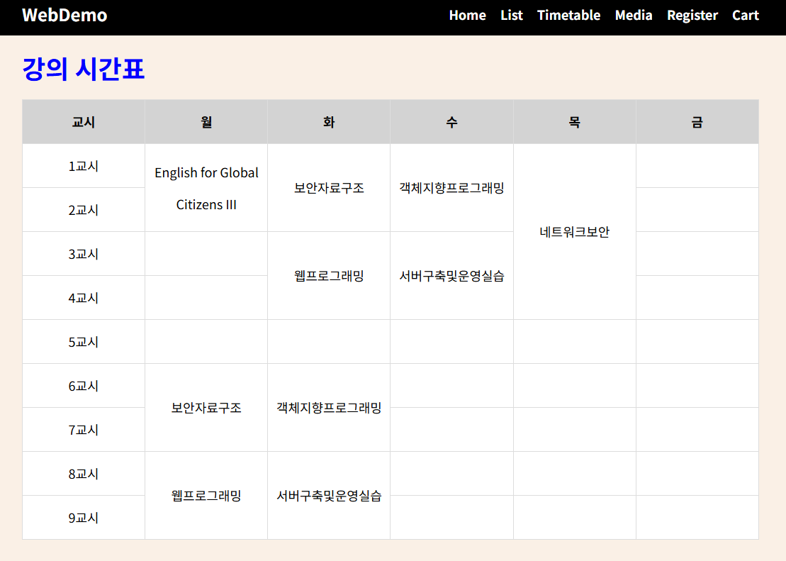
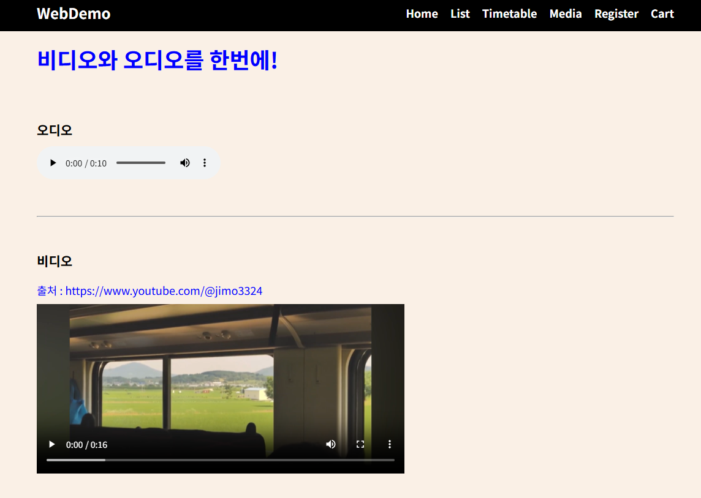
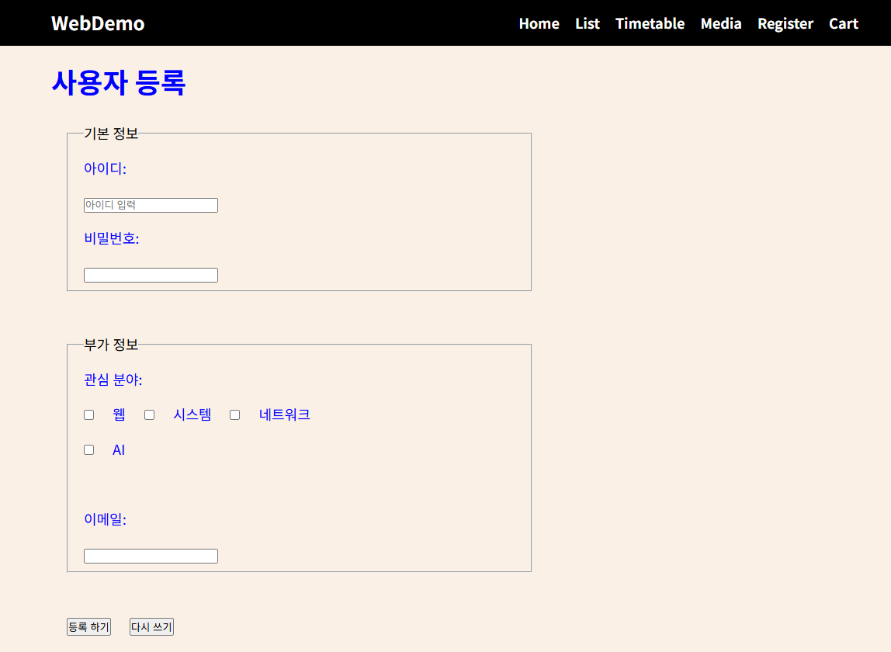
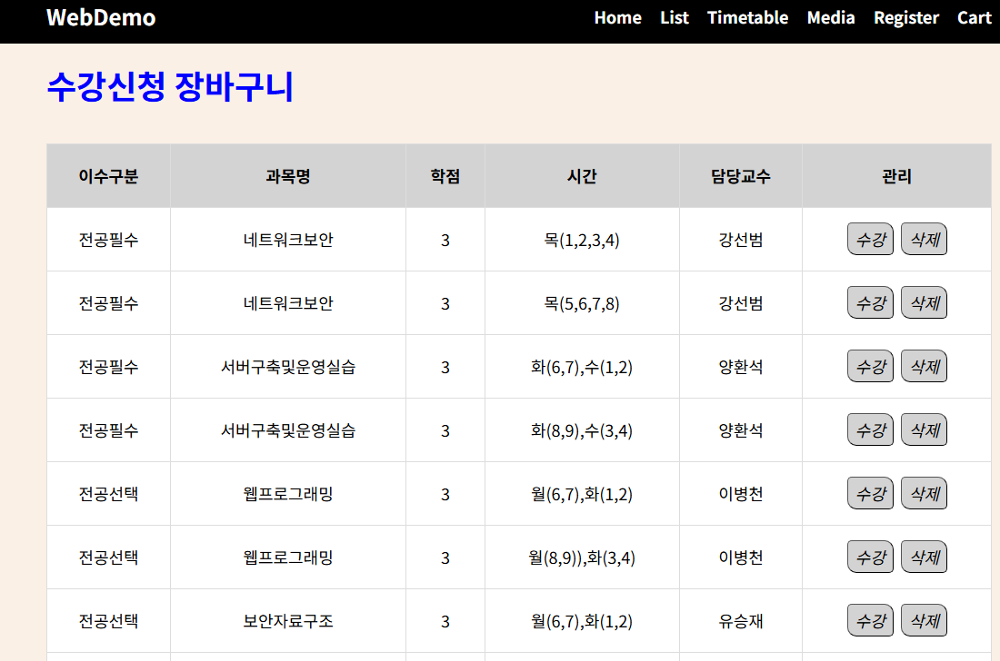

메인 페이지
현재 시간을 실시간으로 표시하고,
배경색을 바꾸는 버튼을 구현하였다.

프로젝트 소개 페이지
프로젝트와 사용한 기술 요소를 간단하게 소개한다.

list 태그를 이용한 카페 메뉴판
ul, ol, dl 세 가지 목록 태그를 활용하여 카페 메뉴판을 구현하였다. 음료는 dl 태그, 디저트는 ol 태그로 구분하였다.

강의 시간표 테이블
colspan과 rowspan을 활용하여 table 태그로
강의 시간표 테이블을 구현하였다.

audio / video 태그를 활용한 오디오/미디어페이지
audio와 video 태그를 사용해 미디어 파일을 웹 페이지에
직접 삽입하였다.

사용자 등록 페이지
사용자 등록 form 태그 안에 input, checkbox, radio 등
입력 요소를 사용해 회원가입 페이지를 구현하였다.

수강신청 장바구니 화면
table 태그로 수강신청 시스템의 장바구니 화면을 구현하였다.
